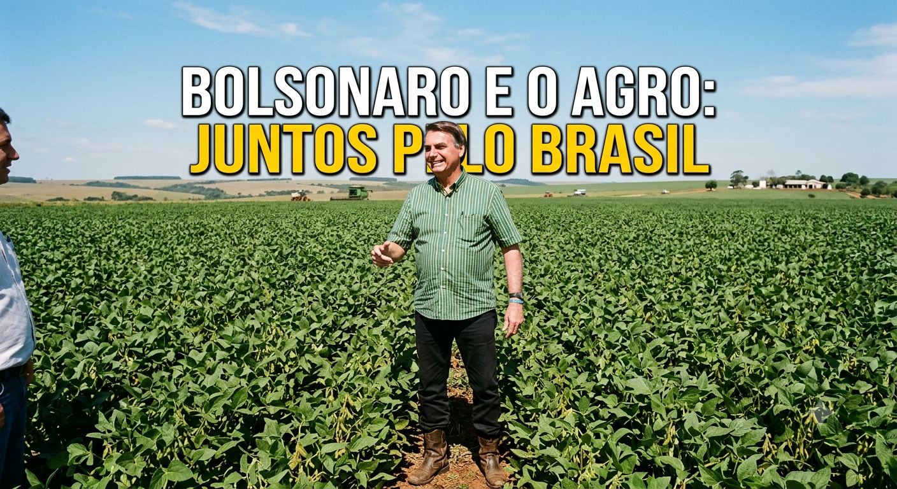
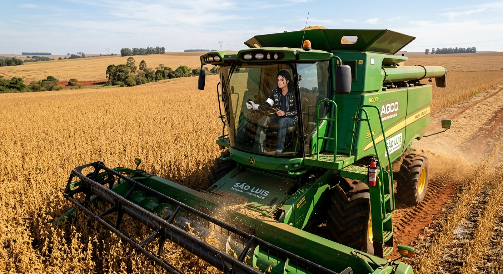

O que é monocultura?
A monocultura é um sistema agrícola caracterizado pelo cultivo de uma única espécie vegetal em grandes extensões de terra. No Brasil, as principais monoculturas são soja, milho, cana-de-açúcar, café e algodão. Esse modelo produtivo tornou-se um dos pilares do agronegócio nacional devido à sua capacidade de gerar altos volumes de produção e atender à demanda dos mercados interno e externo.
Vantagens econômicas da monocultura
A produção em larga escala proporciona maior eficiência operacional, permitindo o uso intensivo de máquinas, tecnologias agrícolas e técnicas de gestão que reduzem custos e aumentam a produtividade. Além disso, a especialização produtiva facilita o planejamento da produção, a logística de transporte e a comercialização dos produtos.
toque nos ícones para explorar as vantagens
Produtividade
Aumento expressivo da produtividade por hectare através da padronização e otimização do manejo.
Custos Reduzidos
Redução drástica dos custos operacionais de produção por meio de economias de escala robustas.
Competitividade
Maior competitividade no mercado internacional, consolidando o Brasil como um player global.
Inovação Tech
Estímulo contínuo à inovação tecnológica no campo e integração de inteligência artificial na colheita.
Geração de Empregos
Forte geração de empregos diretos e indiretos em toda a capilaridade da cadeia do agronegócio brasileiro.
Fluxograma de Impacto Econômico
veja os detalhes do fluxo de geração de valor

Influência no crescimento do PIB brasileiro
O agronegócio possui papel fundamental na economia nacional, contribuindo significativamente para a formação do Produto Interno Bruto (PIB). A monocultura, especialmente de commodities agrícolas como soja, milho e cana-de-açúcar, impulsiona as exportações brasileiras e fortalece a balança comercial.
A elevada produção agrícola gera receitas para produtores, empresas de transporte, indústrias de processamento e setores relacionados, movimentando diversos segmentos da economia. Além disso, o aumento das exportações resulta na entrada de divisas estrangeiras, fortalecendo a economia e contribuindo para o crescimento econômico do país.

Conclusão
"A monocultura desempenha um papel estratégico no desenvolvimento econômico brasileiro. Sua elevada produtividade, eficiência operacional e capacidade de abastecer mercados internacionais tornam esse modelo agrícola um importante fator de crescimento do PIB. Embora existam desafios relacionados à sustentabilidade e à diversificação produtiva, sua contribuição para a geração de riqueza, empregos e exportações reforça sua relevância para a economia nacional."